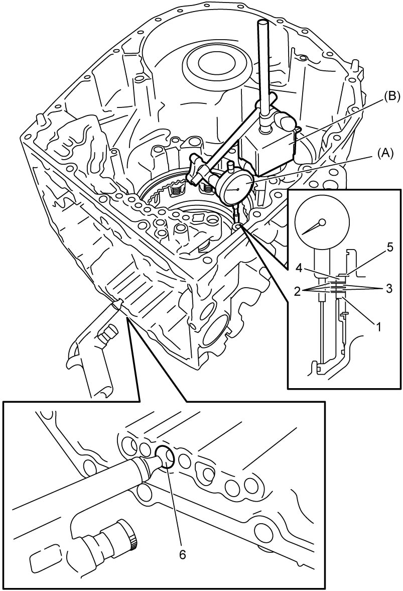

5A
| 1st and Reverse Brake Piston Stroke Inspection and Adjustment |
Inspection
1)Install 1st and reverse brake piston, 1st and reverse brake return spring and snap ring.
2)Apply ATF to 1st and reverse brake retaining plate No.1 (1), 1st and reverse brake discs (2), 1st and reverse brake separator plates (3) and 1st and reverse brake retaining plate No.2 (4) and install them, and then install snap ring (5).
3)Install special tools and blow in air (200 kPa, 2.0 kgf/ cm2, 29.0 psi) through oil hole (6) of transaxle case as shown in figure, and then measure piston stroke of 1st and reverse brake.

1st and reverse brake piston stroke
M16A model: 0.78 to 0.98 mm (0.031 to 0.038 in.)
K14C model: 1.04 to 1.24 mm (0.041 to 0.049 in.)

 "Expand image")
Adjustment
When piston stroke is out of specification, select 1st and reverse brake retaining plate No.2 with suitable thickness from the following table and replace it.
Available 1st and reverse brake retaining plate thickness
| Thickness | Identification mark |
|---|---|
| 3.6 mm (0.142 in.) | A |
| 3.7 mm (0.146 in.) | B |
| 3.8 mm (0.150 in.) | C |
| 3.9 mm (0.153 in.) | D |
| 4.0 mm (0.157 in.) | E |
| 4.1 mm (0.161 in.) | F |
| 4.2 mm (0.165 in.) | G |